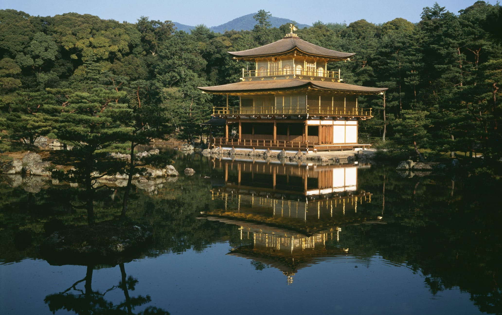
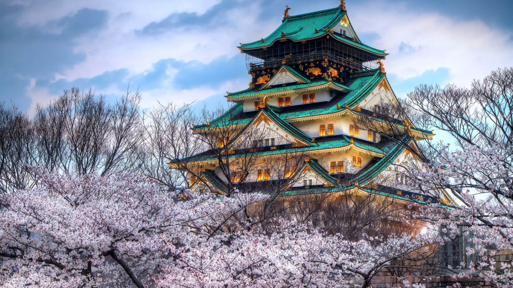
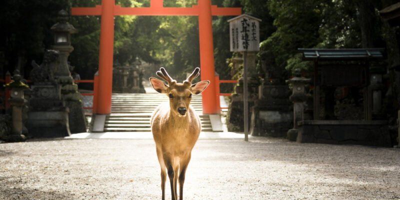
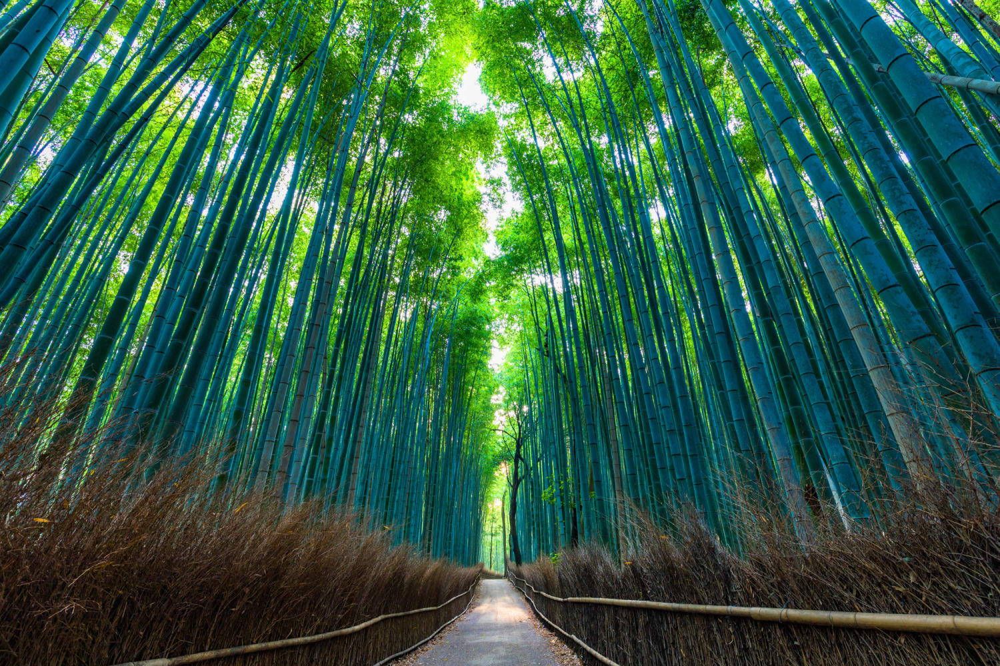
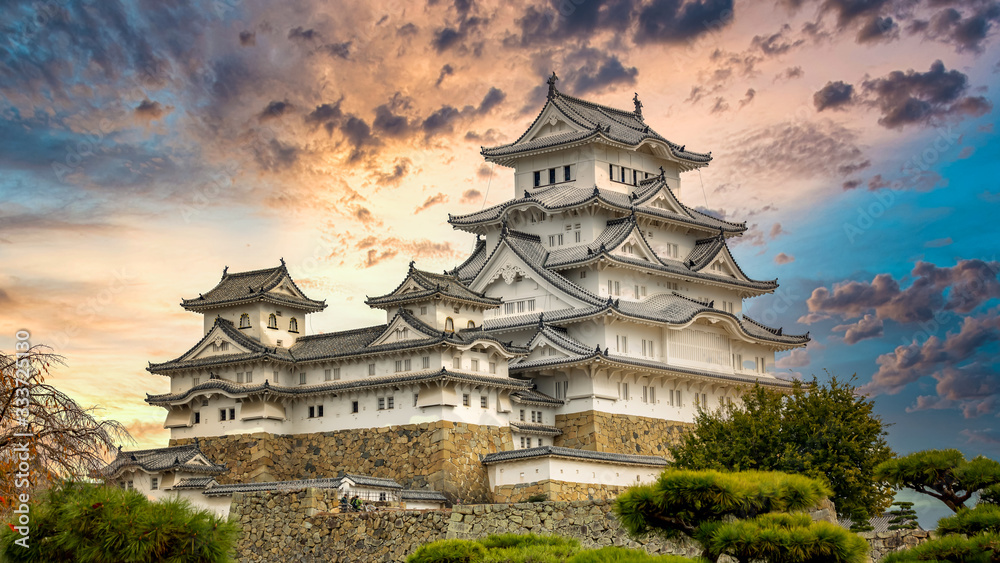
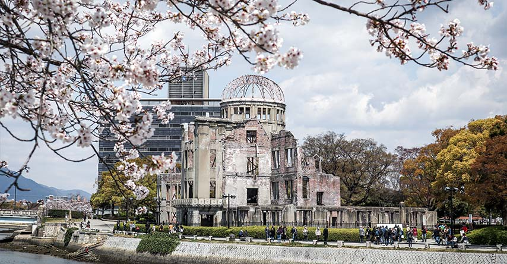

Conheça alguns dos pontos Turíticos do Japão
Monte Fuji

O Monte Fuji é a montanha mais alta do Japão e uma das atrações turísticas mais conhecidas. Ele é famoso por sua forma simétrica e é um símbolo nacional do Japão.
Templo de Kinkaku-ji
Localizado em Kyoto, o Templo Kinkaku-ji, também conhecido como Pavilhão Dourado, é uma das construções mais belas e famosas do Japão.
Castelo de Osaka
O Castelo de Osaka é um dos castelos mais icônicos do Japão, com uma rica história e rodeado por belos jardins de cerejeiras.
Parque de Nara
O Parque de Nara é famoso por seus cervos soltos, que vagam livremente entre os turistas. Também abriga o Grande Buda, uma estátua colossal de bronze.
Arashiyama
Localizado no vilarejo de Sagano , no lado oeste da cidade, o caminho através do bosque de bambu Arashiyama é curto, mas imersivo. Há algo quase mágico na luz refletida no chão da floresta. Para apreciar ao máximo o efeito, aproxime-se do bosque pelo portão lateral do Templo Tenryu-ji .
Castelo de Himeji
Uma das mais antigas estruturas ainda existentes do Período Sengoku, é considerado como um Tesouro Nacional do Japão, tendo sido classificado como Património Mundial da Humanidade pela UNESCO, em Dezembro de 1993. Juntamente com o Matsumoto-jo e com o Kumamoto-jo, é um dos "Três Famosos Castelos" do Japão e o mais visitado do país.
Atomic Bomb Dome
Localizado no parque Memorial da Paz de Hiroshima, cidade a poucos quilômetros de Kobe, o Atomic Bomb Dome é um símbolo de memória e esperança das tragédias do passado. Esse edifício histórico testemunhou os horrores da bomba atômica durante a Segunda Guerra Mundial. Hoje, ele é um verdadeiro símbolo e uma constante lembrança das consequências devastadoras da guerra.